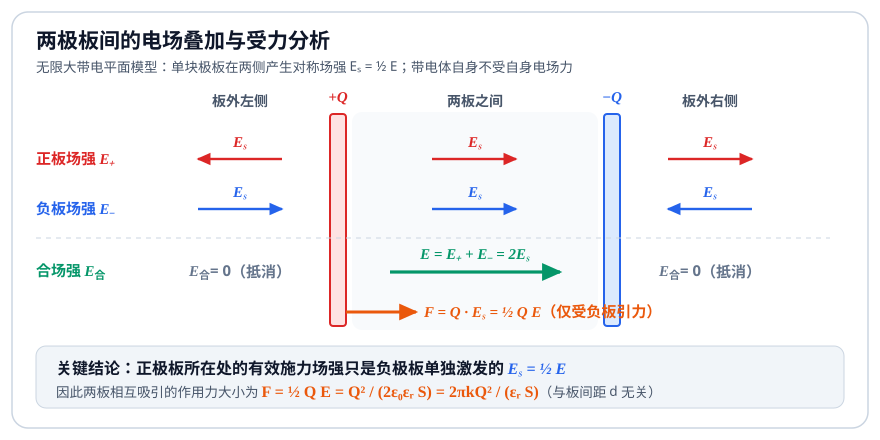
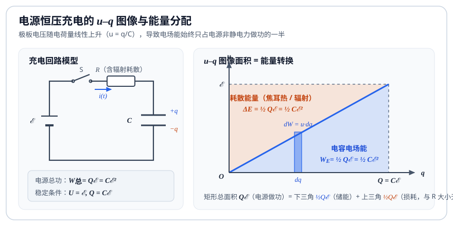

高中物理讲到平行板电容器时，通常在电容决定式 和“ 不变 / 不变”的动态分析处就收尾了。但如果再多追问几步，就会碰到三个表面孤立、实则紧紧咬合在一起的“二分之一”：
- 两极板间的引力为什么是 ，而不是 ？
- 电源把电容器充到 时，为什么只有 的电能变成电场能？
- 这两件事合在一起，如何导出单位体积的电场能（能量密度）？
符号约定：为避免能量与场强重名，下文统一用 表示板间合场强（单极板场强记为 ），用 表示电容器储存的电场能，用 表示电源电动势。
一、 两极板间的作用力：为什么不是 而是 ？

想要分析平行板电容器两极板间的静电引力，首先就要算出极板处的有效电场强度。
虽然极板间的电场可以视为匀强电场，但极板所在位置的施力场强与板间合场强并不相同——带电体自身不能对自己施加电场力。
于是，我们自然设出单块极板在两侧激发的匀强电场强度大小 （）：
- 在两板之间，正、负两板激发的电场强度同向等大，叠加后 ；
- 在两极板之外，两板激发的电场强度反向等大，叠加后 。
由此，可以解释平行板电容器“场强集中在板间、板外为零”的特征。而站在其中一块极板的位置上看，真正对它施力的只有另一块极板激发的电场，场强大小为 。
因此，两极板间的静电引力大小为： 可以看到，当极板带电量 不变时，两板之间的相互引力大小与板间距 无关——这个性质将在第三节派上大用场。
二、 电源充电的“效率悖论”：为什么只有一半电能变成电场能？

电动势为 、内阻为 的直流电源对初态不带电的电容 充电直至稳态。我们审视过程中的能量变化。
熟知电容器的电场能计算公式（结合 图像，电压从 随电荷量线性增至 ，储能对应三角形面积）： 电容器稳定后（）： 整个过程中，电源非静电力做功，即产生的总电能： 可见，只有一半的电能转变为了电场能 。
细细想来，另一半电能被电源内阻 消耗了。设电阻消耗的电热为 ：
待定系数 ： 结果耐人寻味：理论上讲，电容永远不会达到稳态，只会无限接近.
记时间常数 （以常见参数 、、 为例，，）：
| 经过时间 | 具体时间 | 已充进度 | 说明 |
|---|
| | | — |
| | | — |
| | | 工程上通常视作“已充满” |
| | | 每多逼近一个“”多等 |
| | 仅差最后 个电子 | 触及离散电荷的物理极限 |
我们言归正传： 这是因为，的原函数为，其中 为常数。
计算结果表明，电阻消耗的焦耳热恰好为 ，与电容最终储存的电场能 恰好平分了电源非静电力做的总功 。更反直觉的是：耗散掉的这一半能量与电阻 的大小完全无关。
如果回路完全无电阻（）呢？
既然结果与 无关，自然会有一个追问：如果用理想超导导线、内阻也为零（），难道能量还会白白消失一半吗？
答案是依然只有一半能稳定留在静电场中，可以从两个层面理解：
- 数学极限视角（）：当 越来越小时，充电时间常数 （过程趋近瞬时完成），但初始峰值电流 、瞬时热功率 。时间越短、电流越猛，一消一长之下，积分总热量 始终不变。
- 真实物理视角（严格 ）：当电阻真正为零时，纯 模型已失效（ 发散），必须计入回路本身的自感 与电磁辐射：
- 若连辐射也忽略（理想 回路），由 解得 （）。电容充到 （即 ）时电流恰达最大，另一半能量 暂存在磁场 中，随后电流继续冲过头，在 到 之间做无阻尼振荡，根本无法停在稳态；
- 在真实电路中，剧烈变化的电流会向空间辐射电磁波，正是电磁辐射带走了这多余的 ，振荡才得以衰减并最终稳定在 。
换言之，只要用恒定电动势直接给初态不带电的电容充电，不管耗散的出口是电阻焦耳热还是电磁波辐射，最终稳定下来的电场能永远只有电源总功的一半。
如果让电流趋近于零（ 准静态充电）呢？
既然损耗来源于 和突变电流的辐射，想要突破 的限制，关键就是让电流趋近于零：用电压可调的电源，从 开始极为缓慢地把电压升至 （始终只比电容电压高出微小的 ）。在时间 的准静态极限下，电流 ，电阻发热 ，电磁辐射也可忽略——此时电源做功不再是 ，而是 ，几乎 转化为电场能。
三、 单位体积的电场能：两条路线的合流

电场能是电场的属性，犹如质量是物质的属性。从比值定义法出发：
- 质量除以体积，可以得到物质的基本特性：密度；
- 电场能除以体积，类似得到电场的基本属性：单位体积的电场能（能量密度）。
路线 A（从总储能直接出发）：由第二节的 ，代入 与 ： （其中利用了静电力常量与真空介电常数的换算 。）
路线 B（用第一节的引力做虚功）：断开电源保持极板电荷量 不变，此时板间场强 不随间距 变化。缓慢将两板拉开 ，外力克服极板引力做功，全部转化为新增空间 内的电场能： 每拉开 ，电场体积增加 ，电场能增加 ，故单位体积对应的电场能同样为：
对比思考：如果保持电源接通（ 不变）再把极板拉开 ，空间体积变大了，为什么总电场能 反而减小？因为 整体变小了（密度 下降得比体积 上升得更快），且外力做的正功连同减少的电场能一起倒灌回了电源。
总结
回顾这几个看似零散的结论，三个“”其实来自同一套底层物理图景：
- ：来自对称性与场强叠加——极板自身不对自身施力，只感受另一半场强 ；
- ：来自线性响应——电压随电荷量从 线性爬升，恒定电动势突加充电必然有一半能量通过焦耳热或电磁辐射耗散；
- ：既是总储能除以体积，也是虚功法下“新劈出来的那块空间”所储存的能量，把力学、电路与静电场彻底连成了一个自洽的闭环。
理解了能量是真正储存在“电场所在的空间”里，之后再处理平行板电容器的动态分析与能量账本，就不再需要死记硬背各种二级结论了。
正在加载评论…